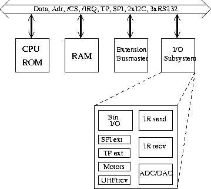
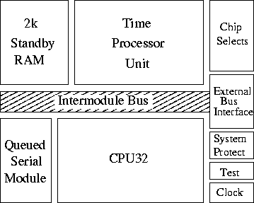
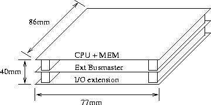
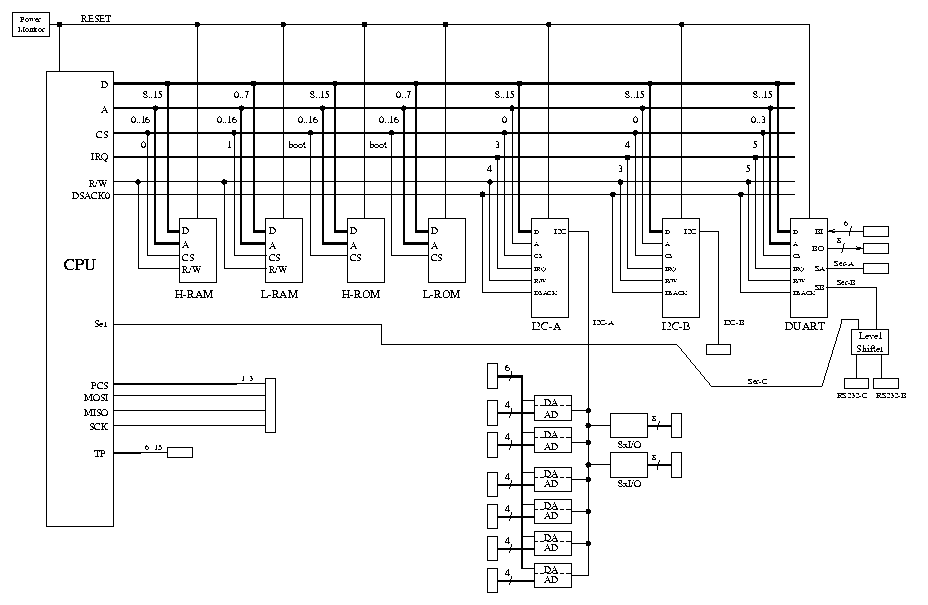

Overview |
Hardware |
BIOS |
Connectors |
Assembly
The architecture of RoboCube
Overview
RoboCube is build on an open bus system. As
shown in the figure below a global bus comprises
several sub-buses which are managed from different sources.

Block diagram of the RoboCube architecture
The system is logically divided into four subsystems:
- The processor subsystem contains the Motorola
MC68332 microcontroller. It provides the address bus, data bus,
special timing channels (TP), interrupt lines (/IRQ), several chip
selects (/CS), an SPI bus and a RS232 serial bus.
- The memory subsystem contains
the boot ROM as well as the main memory.
- The extension busmaster subsystem provides two serial RS232 buses and
two I2C buses for which a broad variety of sensors and actuators
ICs are available.
- The I/O subsystem contains all the interfaces needed in
our current control for the robots.
To get the smallest possible setup which is nevertheless flexible the
processor and memory subsystem are placed on the same printed circuit board.
The following subsections describe the different subsystems mentioned
in the above item list.
The Motorola MC68332 microcontroller
The MC68332 is a 32-bit integrated microcontroller, combining
high-performance data manipulation capabilities with powerful
peripheral subsystems. The subsystems work independently from the main
CPU32 instruction processing unit which is based on the MC68020
processor, thus allowing for a high overall system performance.
The main blocks of the MC68332 are shown in figure below.

Block diagram of the MC68332 microcontroller
The MC68332 contains intelligent peripheral modules such as the time
processor unit (TPU) which provides 16 microcoded channels for
performing time related activities from simple input capture or output
compare to complicated motor control or pulse width modulation. High
speed serial communications are provided by the queued serial module
(QSM) with synchronous and asynchronous protocols available. Two
kilobytes of fully static standby RAM allow fast two-cycle access for
system and data stacks and variable storage with provision for battery
backup. Twelve chip selects enhance system integration for fast
external memory or peripheral access. These modules are connected
on-chip via the intermodule bus (IMB).
The major features of the MC68332 are as follows:
- low-power operation: 600mW max; 0.5mW in standby mode
- frequency: 16.78MHz (software programmable)
- upward object-code compatible from the MC68010
- dedicated instructions for controller applications
- intelligent 16-bit timer:
- 16 independent, programmable channels and pins (TP channels)
- any channel can perform any time function (input capture,
output compare, pulse width modulation, etc.)
- two timer count registers with 2-bit programmable prescalers
- selectable channel priority levels
- two serial I/O subsystems:
- universal asynchronous receiver transmitter (UART) with parity
- serial peripheral interface (SPI) with I/O queue
- 2K on-chip memory
- up to 12 programmable chip selects
- up to 32 discrete I/O's (pins shared with other functions)
With its up to 16MByte of external RAM and the internally 32-bit
architecture this processor offers in addition a powerful
processing unit. With the independent and programmable
submodules which are specialized to control applications many tasks
can be done directly by the processor. This allows for a very compact
and powerful design of the control hardware.
The microcontroller offers a synchronous serial bus, the so-called SPI
bus. The SPI bus is full duplex and allows multiple bus masters. It
has 4 address lines encoding the destination of the transfer. Two
additional lines carry the data in each direction (from and to
the master). The relatively large number of wires and the fact that
only a few devices are available for this bus type make the SPI
bus unattractive to us.
Memory subsystem
The system boots out of a 128kByte EPROM which holds a basic
input/output operating system (BIOS). A huge part of it is dedicated
to the efficient handling of different actuators and sensors.
As the EPROM does not allow the same access time as
the main memory the BIOS copies itself into the main
memory at start-up.
Therefore, a certain part of the functionality of the BIOS can
be overloaded by the `experienced' user at run time.
The main memory is currently a 256kByte low power SRAM with an access
time of 70ns. Thus, no wait states have to be generated and accesses
are done with a normal 3 clock bus cycle. With
the 24 bit address bus the main memory can be extended up to
16MByte. In a final version of the RoboCube the memory subsystem
comprises 2MByte DRAM.
Extension busmasters
A very powerful bus is the inter IC bus from Philips (I2C). It is a
synchronous bus that uses only two lines. There are many devices
available. The major features are
multiple masters,
bidirectional operation,
hardware bus arbitration,
hardware bit and byte level synchronization\footnote{This gives a slow
device the opportunity to adjust the transfer speed to its own
capabilities and can force wait states during the transfer.},
7 bit addresses, and
maximum 100 kBit/s.
Additionally, there are three standard RS232 serial buses in the
system. They allow to bridge long distances and are usually simple to
handle, but they offer normally only poor throughput. The main
advantage here is, that connecting a board to a computer is very
simple. This is especially useful for debugging and downloading
software at startup. One of the RS232 connections is dedicated to the
radio transmission system, which enables the communication to the board
at run time.
Physical layout
One of the most striking features of the RoboCube are its
dimensions. With the size of 40mm x 77mm x 86mm it is very small and
compact (see figure below).

Physical layout of the complete RoboCube
This layout relies on two special design choices. First, all ICs
(except the EPROM with the BIOS) are in surface mounted design (SMD).
Second, we use a special
stacking connector from AMP which builds the global bus perpendicular
to the boards plane. Hence, the system can be easily extended by
stacking additional boards on top of the others. Finally, these
two connector blocks make the whole layout mechanically very stable
and guarantee secure connections.
Data Paths of the RoboCube

Overview |
Hardware |
BIOS |
Connectors |
Assembly